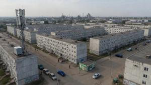
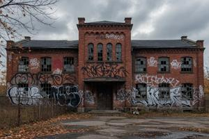
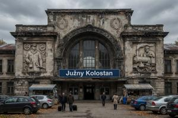

Пятый округ Вроновицы
{kind=link}

Пятый округ (Pjuty okrug) Вроновицы занимает правый берег Южной Дравы — так называемую Задравскую часть (Zadravska) — и тянется от реки на юг до северной окраины Соцкостура.
Исторический обзор
Характер округа сложился во второй половине XIX века: именно сюда все прежние власти охотно выдворяли производства, которым не было места в благоустроенном левобережном городе. Первыми появились кирпичные заводы, лесопилки и заводы стройматериалов — берег и железная дорога были под рукой; к концу XIX — началу XX века выросли текстильные, металлургические, бумагопрядильные и нефтеперерабатывающие заводы. Рабочих поставляла деревня — крестьянское население Верхней Паннонии в те годы стремительно росло. Строилось жильё для рабочих: сначала доходные дома, потом бараки — без всякого плана, на любом клочке земли между фабриками. К концу эпохи Габсбургов Задравская была застроена так же плотно, как любой другой квартал города, — но куда хуже благоустроена.
{kind=link}

Рабочее движение возникло в этом округе раньше, чем где-либо ещё в Верхней Паннонии, и было здесь наиболее сплочённым. Профсоюзы задравских заводов с 1890-х годов служили опорой Социал-демократической партии (СДПВП); в межвоенные годы за ту же среду конкурировали коммунисты и анархо-синдикалисты. Весной 1919 года коммунисты с задравских заводов провозгласили Паннонскую Советскую республику — округ служил центром восстания, пока Паннонский легион не зачистил его завод за заводом в мае и июне; вожаков движения расстреляли по приговорам военных трибуналов. Король Дроган в середине 1930-х запретил все независимые рабочие организации; венгерская оккупация этих запретов не отменила. Северин Гоубка, чья политическая биография неотделима от этой среды, видел в жителях Задравской свою главную социальную базу.
Социалистическая реконструкция началась в середине 1950-х. Обветшавший довоенный жилой фонд шёл под снос; на его месте росли четырёхэтажные панельные дома — «гоубкины ящики» (Gowbczi skrynki) — с водопроводом, электричеством и газовыми колонками, которые далеко не всегда имелись в прежних постройках. Следом появились школы, поликлиники и рабочие клубы. В рамках той же программы реконструировали Южный вокзал на старом позднегабсбургском фундаменте. Ныне гоубкины ящики давно пережили свой отведённый срок и постепенно разрушаются.
Постсоциалистические реформы привели в Задравской к экономической катастрофе. К 1991 году безработица в промышленных кварталах намного обогнала средний по городу уровень, и без того высокий. Криминальные структуры захватили контроль над немногими доходными предприятиями округа прежде, чем гражданская власть успела что-либо предпринять. Главные предприятия — Вроновицкий нефтеперерабатывающий завод и текстильная фабрика «Красная нить» (Czrevena Nicz) — бесперебойно работали под криминальной «крышей» весь острый период гражданской войны, что сдерживало межэтническое насилие в этом округе, в отличие от южных кварталов.
Згурцы, которые при социализме составляли немалую долю рабочей силы Задравской, стали уходить под давлением гражданской войны. Процесс завершился к 1995 году, когда Лозаннские соглашения закрепили принадлежность округа деглянской зоне. Теперь в округе живут только дегляне.
Топография
Пятый округ пересекают три проспекта, уходящие к югу от южной дуги Мостового кольца. Восточный — проспект Спайдермена: деглянская администрация назвала его в честь одного из командиров гражданской войны. Жельо «Спайдермен» Тотов, более известный по прозвищу, чем по имени, — национальный герой в деглянской зоне и фигурант международных уголовных дел везде за её пределами. Центральный — проспект Независимости (Jezda Nepodstoja), главная ось округа, начинающаяся от Турецкого моста. Западный — проспект Леопарда, также названный в честь деглянского полевого командира Антона «Леопарда» Пекарчика. На картах згурской зоны сохраняются советские названия: проспект Социализма (Jezda Socialyzma) на востоке и проспект Дружбы народов (Jezda Druzsby Narodov) на западе — последний стал местом самых кровавых злодеяний гражданской войны. Южнее три проспекта соединяет длинная дуга Рабочего проспекта (Robocza jezda), обозначающего границу с Соцкостуром.
{kind=link}

Южный вокзал (Juzsny Kolostan) — главный конечный пункт для поездов южного и восточного направлений — построен в последние годы правления Габсбургов и полностью перестроен при Гоубке в 1950-х. Старое здание снесли, новое выстроили в монументальном стиле, типичном для социалистической инфраструктуры: каменный фасад, высокий сводчатый зал и декоративные рельефы, прославляющие труд железнодорожников. Вокзал обслуживает линии на юг, через Седьмой округ, в деглянскую зону. Международное сообщение с 1991 года отсутствует.
Кроме вокзала и промышленных предприятий, в округе нет ни одной сколько-нибудь значимой гражданской или культурной достопримечательности. Застройка жилая и промышленная, большей частью — 1950-х годов. Типичный городской вид — бесконечные неотличимые кварталы обветшалых гоубкиных ящиков.
Категории: Вроновица, Округа Вроновицы